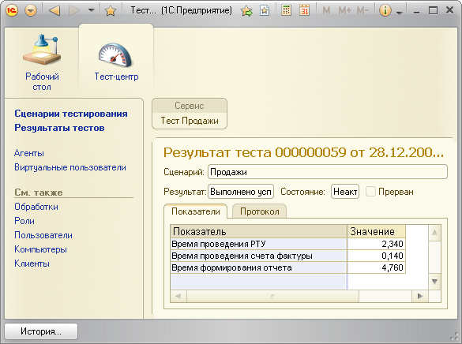

Теперь все готово для создания сценария тестирования.
Для создания, редактирования и запуска Сценариев предназначен список Сценариев Тест-центра 2.0.
Сценарий представляет собой список строк со следующими полями:
ВАЖНО! Если виртуальные пользователи будут работать в WEB-клиенте, то нельзя указать количество отличное от 1. Это связано с особенностью работы WEB-клиента, которая заключается в том, что нельзя запустить несколько WEB-клиентов на одном компьютере от имени одного пользователя операционной системы.
Таким образом для работы нескольких WEB-клиентов на одном компьютере необходимо создать несколько разных пользователей опрационной системы, несколько разных пользователей информационной базы с аутентификацией Windows и затем несколько разных строк сценария (каждая строка – от своего пользователя).
ВАЖНО! Будьте осторожны со значением поля «Количество» при использовании тонкого клиента. Все виртуальные пользователи этой строки будут запущены на одном компьютере и от одного имени пользователя. Это означает, что все они будут иметь один общий кэш запросов (служебный кэш 1С:Предприятия). При высокой интенсивности работы это может привести к блокировкам при обращении к кэшу и к существеному замедлению работы, которое скажется на конечном результате тестирования.
В текущей версии Тест-центра не рекомендуется запускать много интенсивно работающих виртуальных пользователей в тонком клиенте на одном компьютере. Лучшим решением будет создать несколько разных пользователей и, соответственно, несколько разных строк в сценарии.
На второй закладке вы можете дать текстовое описание текущего сценария.
На зкаладке «Параметры» необходимо указать служебные параметры работы теста.
Флаг «Пауза после запуска ВП» следует установить для того, что бы при запуске теста Тест-центр выдал сообщение и приостановил работу после того, как все виртуальные пользователи будут успешно запущены. Это может понадобиться, например, при отладке теста для того, чтобы подключиться к нужным виртуальным пользователем отладчиком.
Останеы параметы сценария представляют собой время в секундах, в течение которого Тест-центр 2.0 будет ожидать завершения соответствующего действия. Если действие не будет завершено за указанное время, то Тест-центр будет считать, что действие «зависло» и завершит работу теста с ошибкой.
Для того, чтобы запустить тест на основании созданного сценария нажмите кнопку «Выполнить» в правом нижнем углу формы списка сценариев. Сценарий запустится на выполнение. Ход сценария будет отображаться в открышейся форме.
ВАЖНО! При первом запуске теста созможна ситуация, когда один из виртуальных пользователей будет вынужден зарегистрировать внешнюю компоненту для дальнейшей работы. В этом случае виртуальный пользователь отобразит сообщение о том, что компонента зарегистрирована и будет ожидать нажатия кнопки "ОК". Работать в составе теста такой пользователь не сможет. Ситуация будет выглядеть так, как будто тест "завис". В этом случае пользователю необходимо нажать кнопку "ОК" в окне сообщения соответствующего виртуального пользователя, и выполнение теста продолжится. При повторном запуске теста в аналогичных условиях сообщение больше появляться не будет.
После завершения выполнения теста будут показаны его результаты.
